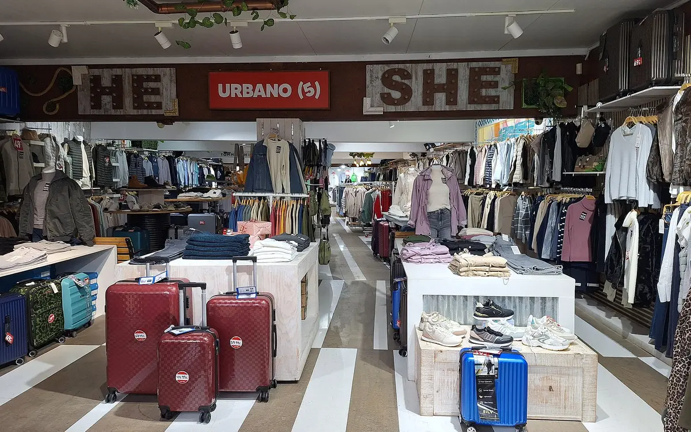

Full article · LinkedIn
Sustainable585: Issue #1 — Where Spring Begins
The first Sustainable585 dispatch: a recurring environmental roundup focused on the greater Rochester region.

Weekly Environmental Dispatch From Sustainable585
There’s a kind of clarity that only early April offers—when the ground is still damp from snowmelt, and the birds begin to sound more like themselves again. This week across the 585, that clarity took form in small, meaningful acts: a community painting session, a countywide cleanup. Both events, quiet on the surface, carried weight. Not just in what they accomplished, but in what they signaled. Spring isn’t official until people begin to show up for the land again.
I: The Art of Reverence - Eagle Watch at Iroquois
At the Iroquois National Wildlife Refuge, last weekend wasn’t just about watching birds—it was about seeing them.
Seventeen participants gathered for a Bald Eagle painting program, guided by longtime volunteer Judy Light, whose work with Friends of Iroquois has become a local touchstone. The crowd ranged from toddlers to retirees, all gathered around tables of paint, reference images, and a shared sense of awe. Together, they painted a species that once disappeared from these skies—and slowly, carefully, returned.
Art is often treated as an extra in conservation spaces, something adjacent or decorative. But here, it became something closer to ritual. A way of slowing down. A reminder that the eagle is not just a symbol—it’s a survivor. It’s here.
The event wasn’t just about wildlife appreciation. It was about local culture, community connection, and the possibility that the next generation won’t only learn about eagles, but remember seeing them—majestic, ordinary, real.
II: Cleaning Up the Quiet Way - Pick Up the Parks 2025
Meanwhile, back in Rochester, another kind of restoration was taking place.
On April 12, volunteers fanned out across Monroe County’s 22 parks as part of the annual Pick Up the Parks initiative—a spring cleanup effort that has become a staple of Earth Month in the region. The day started early: 8:30 AM check-ins, safety waivers, and coffee steaming in the cold. Then the real work began.
Trash collection. Trail clearing. Shelter sweeping. Mulching and weeding where needed. Park staff assigned tasks and locations, and crews got to work—quietly, efficiently, without fuss. Most people don’t think of raking as an act of protest or optimism. But in a city like Rochester, where our watersheds are tied so directly to how we treat our land, these cleanups matter.
They keep litter from entering our creeks. They extend the life of community spaces. They remind us, even in the digital noise of spring, that showing up physically still means something.
Events like these don’t generate headlines, but they generate momentum. They turn “someone should” into “I will.” And when done right, they do it without spectacle.
What This Is (And Isn’t)
This newsletter isn’t designed to go viral. It’s designed to stay. To linger in inboxes the way muddy footprints linger on a trail: evidence that someone was here, and cared enough to keep walking.
Each week, I’ll be writing about local environmental stories—some from the papers, some from the parks, some from the people doing the work. I want to document what’s happening here. I want to listen better. And I want you to see what I see: a region that’s already halfway to something remarkable.
This was Week One.
We’ll be back next Sunday.
—Paul
About this project
See the assignment, process, and Paul’s contribution.
Paul created, researched, wrote, and published the Sustainable585 series independently.
Related work
Continue through the subject.

Sustainable585: Issue #2 — Where the Work Begins
A look at how practical sustainability work begins in the 585—quietly, locally, and one committed step at a time.

Sustainable585: Issue #3 — Biweekly Regional Roundup
Earth Day, Arbor Day, heavy rain, and collective sustainability work across the 585 in early May.

Beyond Fast Fashion — Five Rochester Brands Leading the Local Sustainability Movement
A look at five Rochester-area businesses approaching clothing, materials, and local sustainability differently.